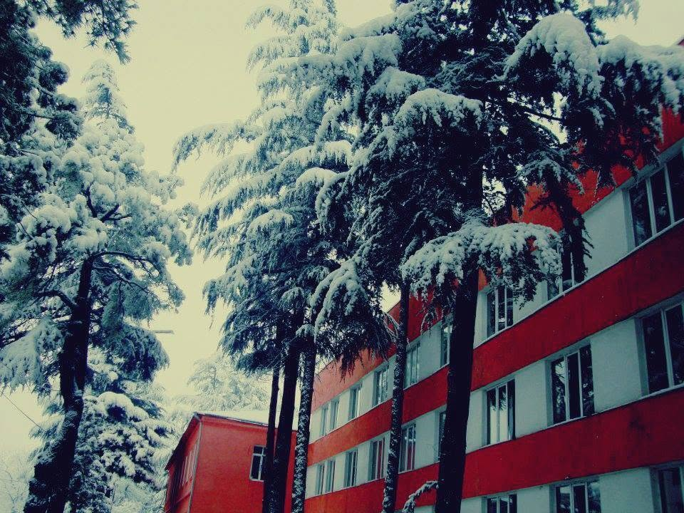
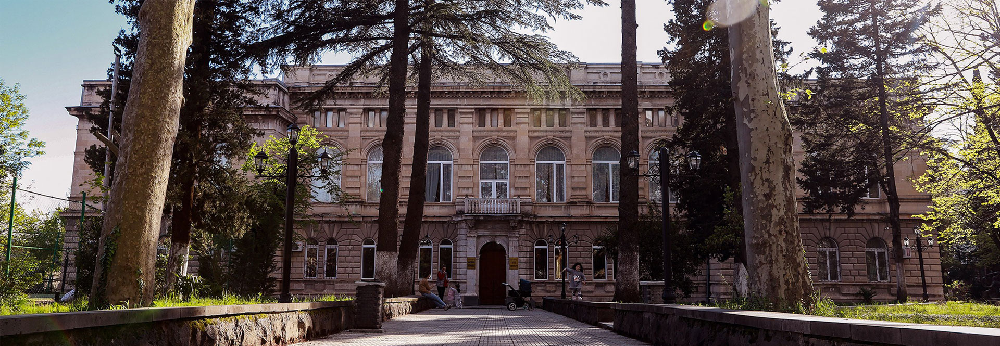

მე დავამთავრე ხონის პირველი საჯარო სკოლა, სადაც მივიღე საბაზისო განათლება და ჩამომიყალიბდა ძლიერი ინტერესები სხვადასხვა სფეროების მიმართ. განსაკუთრებით მაინტერესებდა ტექნოლოგიები, მათემატიკა და ეკონომიკური საგნები, რაც მომავალში ჩემი არჩევანის საფუძველი გახდა.
ამჟამად ვსწავლობ აკაკი წერეთლის სახელმწიფო უნივერსიტეტში ბიზნეს ადმინისტრირების მიმართულებით. ეს სფერო მაძლევს შესაძლებლობას გავიგო როგორ მუშაობს ბიზნესი, როგორ იმართება კომპანიები და როგორ მიიღება ეკონომიკური გადაწყვეტილებები რეალურ გარემოში.
გარდა ძირითადი სპეციალობისა, მაინორად მაქვს კომპიუტერული მეცნიერება. აქ ვსწავლობ პროგრამირების საფუძვლებს, ალგორითმებს, მონაცემებთან მუშაობას და თანამედროვე ტექნოლოგიების გამოყენებას. ეს მიმართულება ჩემთვის ძალიან საინტერესოა და მომავალში დიდ შესაძლებლობებს მაძლევს.
ჩემი მიზანია ეს ორი მიმართულება დავაკავშირო ერთმანეთთან — ბიზნესის ცოდნა და ტექნოლოგიები გამოვიყენო ერთად, შევქმნა ინოვაციური პროექტები და მომავალში ვიყო წარმატებული პროფესიონალი ჩემს სფეროში.

